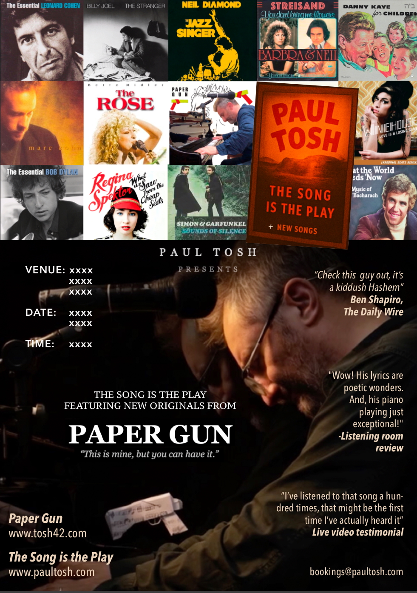

Theatrical piano · Available nationwide · bookings@tosh42.com
◆ Book NowScottish Crooner · Pianist · Looping Artist · Songwriter
Where iconic songs become living theatre
Now booking 2026 / 27 across the U.S.
"I think I've listened to that song a hundred times —
but that might be the first time I've actually heard it." Audience member · video testimonial
Two Distinct Shows
Concert · Performance Art
Well-known songs performed as theatrical prose, then brought to life with live looping piano. Billy Joel, The Beatles, Bob Dylan, Neil Diamond, Sinatra — each one acted out like a scene from a play, then sung with layered harmonies and rhythms built live in real time. Think the Boston Pops meets solo theatre: music reimagined with storytelling.
Also incorporating Backstage With The Tribe for Jewish audiences — weaving the prophetic family histories and hidden roots of the songwriters who shaped generations.
"I can't believe the level of artistry you're bringing to the people in these residential homes. I bet they'd never seen anything like it before."Watch the show
— Joe Tepperman, Author & theater writer
Operetta · Original Work
An original one-piano-man operetta told in monologue and melody. Sharp, poetic, unflinching. Halfway between a musical and a play, Paper Gun explores the death of the conscience buried in the heart — the moment when seeing beyond context is no longer enough, and something must be done.
25 original songs across 3 acts. Intimate cabaret format. Commissioned for private home concerts, arts venues, and residencies. Also available via the dedicated site: tosh42.com
"Last night made me feel like pre-WWII era of the arts in society. Loved it."Full operetta site
— Libby Fox, Hostess, Charleston home premiere
Programme Poster

Who Books Paul
A decade performing up and down the East Coast. Self-sufficient — Paul brings a full technical setup. No piano at your venue? He has a looping piano and keyboard rig. Available any time except sundown Friday to sundown Saturday.
Technical
Fully Self-Sufficient
Paul arrives with a complete technical line-up. Live looping system with microphones inside the acoustic grand piano — the same technique Ed Sheeran uses in concert, adapted for the intimacy of solo performance. If your venue has no piano, a full keyboard and looping rig is available.
Availability
Currently Booking 2026–27
Available any time except sundown Friday to sundown Saturday. Winter Saturday performances from 7:30–8pm onwards (to allow travel time plus one hour setup). Touring the U.S. in the Phoenix CyberPhoenix pop-up camper — genuinely available coast to coast.
Repertoire
Flexible Programme
Happy to work with you on the ratio of classics to originals, or leave it entirely to Paul to read the room. He specialises in live improvisation and audience connection — the programme adapts to the crowd, always. A full song menu is available on request.
What People Say
"You don't know this but nobody leaves when you play. With the other entertainers people tiptoe out — with you they tiptoe in."
Phyllis Baumrind · Resident, The Bristal Englewood, NY
"Bar sales are way up whenever Paul plays. A quality style. Please do not hesitate to contact me for a reference."
Andrew Hollett · GM, Corus Hyde Park
"It's Beatles, U2, Bob Dylan, Billy Joel, jazz — the world would welcome something like this now with open arms. The songs are timeless. It's an album like Sgt. Pepper."
Orna Wellman · Drama & English Teacher, Canada
"A poetic call to presence — reminding us that the pursuit itself is the purpose, and that love is the foundation of it all. He really knows how to incorporate an audience."
Amy Kirshtein · Private home concert
"I like it how you tell the history of the songwriters. If they could give you a review from last night, they'd have given you all 10s."
Stanley Baker · President, BSBI Synagogue, Charleston SC
"Really good solid organic original material — it has to be experienced live. Not simple in structure nor in emotional content."
Miguel Cavazos · Session Drummer, LA
"When you go into the spoken word style it sounds a little bit like Bob Dylan and David Bowie combined."
Sound Engineer · Fox Recital Room, Charleston
"Paul has been performing at our assisted living community for two years, almost monthly. Interactive, exciting — he's been known to learn a song for our residents."
Courtney Corrosi · Activities Director, Brightview Senior Living, Maryland
"You don't know this but nobody leaves when you play. With the other entertainers people tiptoe out — with you they tiptoe in."
Phyllis Baumrind · Resident, The Bristal Englewood, NY
"Bar sales are way up whenever Paul plays. A quality style. Please do not hesitate to contact me for a reference."
Andrew Hollett · GM, Corus Hyde Park
"It's Beatles, U2, Bob Dylan, Billy Joel, jazz — the world would welcome something like this now with open arms. The songs are timeless. It's an album like Sgt. Pepper."
Orna Wellman · Drama & English Teacher, Canada
"A poetic call to presence — reminding us that the pursuit itself is the purpose, and that love is the foundation of it all."
Amy Kirshtein · Private home concert
"I like it how you tell the history of the songwriters. If they could give you a review from last night, they'd have given you all 10s."
Stanley Baker · President, BSBI Synagogue, Charleston SC
"Really good solid organic original material — it has to be experienced live."
Miguel Cavazos · Session Drummer, LA
"When you go into the spoken word style it sounds a little bit like Bob Dylan and David Bowie combined."
Sound Engineer · Fox Recital Room, Charleston
"Paul has been performing at our assisted living community for two years, almost monthly. Interactive, exciting."
Courtney Corrosi · Activities Director, Brightview Senior Living, Maryland
"The very embodiment of the term Crooner. Knows his way round the ivories better than most, with an unbeatable repertoire of Classics and originals to keep you entertained."
Alex Clare · Island Records Artist
"Check this guy out — it's a kiddush Hashem."
Ben Shapiro · The Daily Wire
"He speaks in a distinctive Scottish accent. With a friendly, bubbly personality that lights up the room and makes everyone feel welcome."
Baltimore Jewish Times
"I especially like the substantive intellectual meaning you weave into your music. You remind me of the inspiring Shlomo Carlebach."
Rabbi Daniel Lapin · RabbiDanielLapin.com
"Wow — this is as different a performance as anything I've seen in the Listening Room Network. Really more performance art than musical performance. His piano playing is just exceptional."
Listening Room Network · Audition Review, Aug 2025
Watch
The videos do the explaining. Watch audience reactions, full performances, and originals.
The Technique
One man. One piano. A full orchestral sound — built live, in real time, in front of you. No backing tracks. No band. Every layer you hear is created and looped on the spot.
The Method
Ed Sheeran's Technique
Microphones placed inside the acoustic grand piano, capturing individual strings — the same live looping technique Ed Sheeran uses at stadium scale, adapted for the intimacy of solo performance.
The Result
No Band Required
Bass lines, harmony vocals, rhythm, and melody — all layered live. Every performance is unrepeatable. The audience watches the music being built from nothing, which is itself part of the theatre.
The Setup
Fully Self-Sufficient
Paul arrives with a complete technical rig. No piano at your venue? A full keyboard and looping setup travels with him. No sound engineer needed. He sets up, performs, and leaves the room intact.
Paul Tosh is a Scottish-born, USA-touring singer, pianist, and songwriter renowned for emotive performances and an eclectic musical style that blends jazz, classical, pop, folk, and traditional music.
He built his repertoire and his performance philosophy in the hotels of Hyde Park and Regents Park, London — four hours a night, four nights a week, for four years. That's where he learned to read a room, to hold an audience, and to discover that the best thing you can do with a familiar song is reveal what it was always trying to say.
"You are an artist in your own right — I just hear Paul Tosh." Miss Sylvia · Brightview Wellspring (video testimonial)
Touring the U.S. in a custom CyberPhoenix pop-up camper, Paul brings these shows to senior living communities, synagogues, private homes, country clubs, and arts venues up and down the East Coast — and increasingly coast to coast.
His live looping system — microphones placed inside the acoustic grand piano, the same technique Ed Sheeran uses at scale — lets him build full orchestral textures as a solo performer. No band required. No backing tracks. Every performance is live, layered in real time, and unrepeatable.
"Entertainment for seniors is a noble mission, for which you are perfectly suited. They are deserving of the same quality of entertainment that the rest of us can access. Long may you continue." Kate Tough · roots of the great songwriters into the performance of their music. Available standalone or incorporated into either main show.
Get in touch
For availability, pricing, and format discussion — please reach out directly.
Email PaulPaul responds personally to every enquiry
◆ Book Now